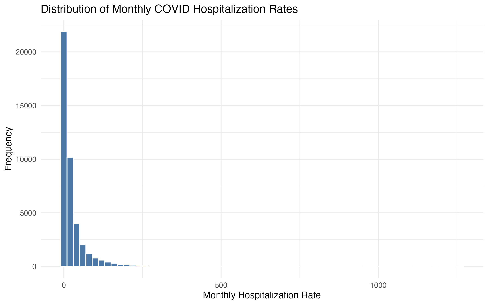
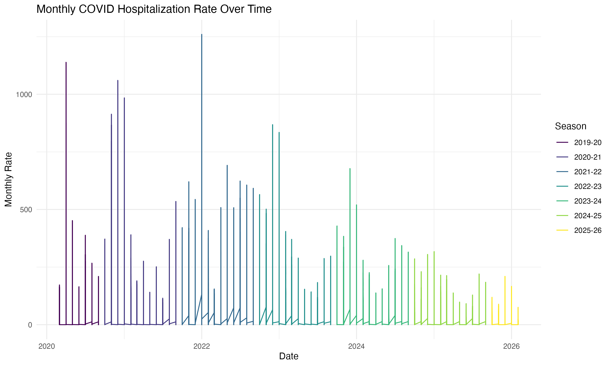
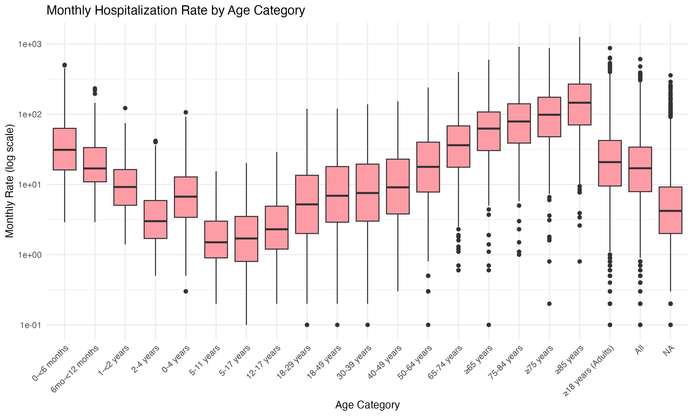
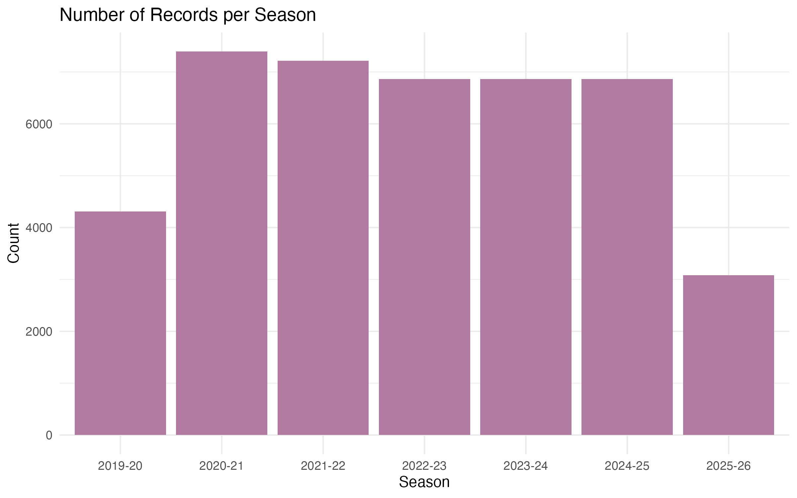
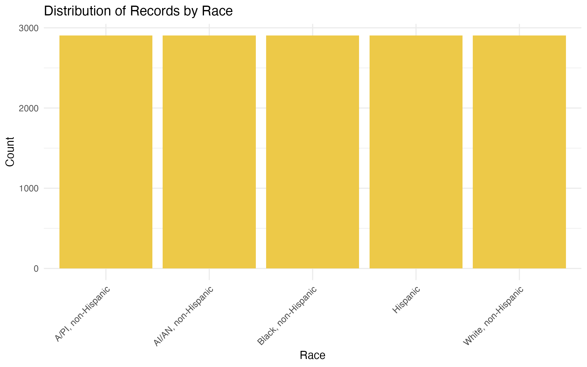
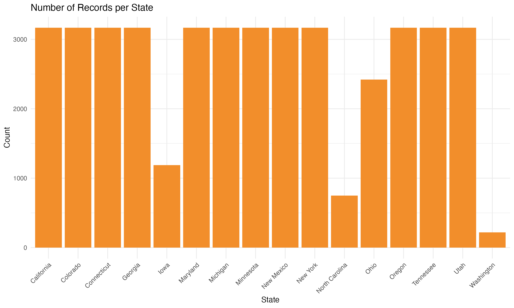
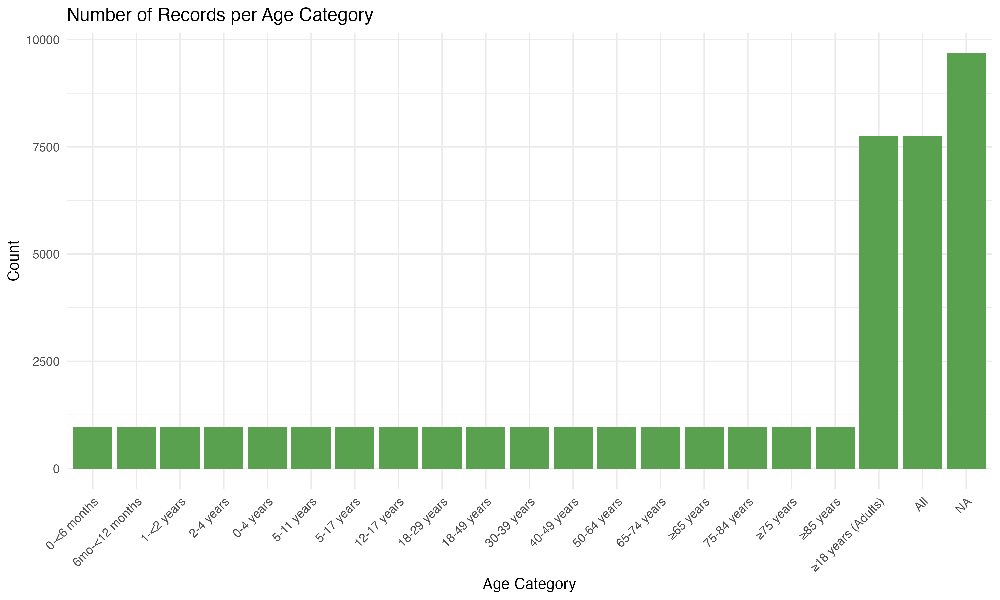
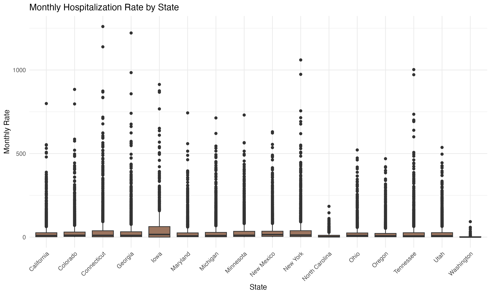
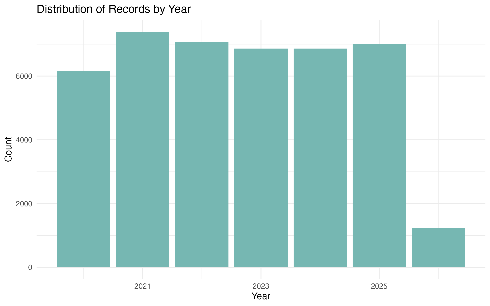

This analysis uses the CDC COVID-NET Hospitalization Surveillance Dataset . COVID-NET is an active, population-based surveillance network that tracks laboratory-confirmed COVID-19-associated hospitalizations among both children and adults. It is part of the broader Respiratory Virus Hospitalization Surveillance Network (RESP-NET), alongside similar networks for RSV and influenza. Hospitalization rates reflect how many people in the surveillance area were hospitalized with COVID-19 relative to the total population in that area. The dataset covers 16 U.S. states from 2019 through 2026, broken down by age group, race/ethnicity, and state. Data are preliminary and subject to change as more data become available.
Several biases may affect this dataset. First, surveillance bias: states like Washington and North Carolina have far fewer records than others, suggesting inconsistent reporting — not necessarily lower disease burden. Second, racial/ethnic underrepresentation: certain groups may be undercounted due to gaps in race/ethnicity data collection at hospitals. Third, testing bias: early in the pandemic, limited testing meant hospitalizations were more likely recorded for severe cases only, inflating apparent rates in 2020. Finally, since data are preliminary and updated weekly, more recent seasons may be incomplete compared to earlier ones.
| Min | 1st Qu. | Median | Mean | 3rd Qu. | Max |
|---|---|---|---|---|---|
| 0.00 | 2.30 | 9.40 | 29.15 | 29.60 | 1,260.00 |
| Min | 1st Qu. | Median | Mean | 3rd Qu. | Max |
|---|---|---|---|---|---|
| 2020 | 2021 | 2023 | 2023 | 2024 | 2026 |
| Age Group | Count |
|---|---|
| 0–<6 months | 968 |
| 6mo–<12 months | 968 |
| 1–<2 years | 968 |
| 2–4 years | 968 |
| 0–4 years | 968 |
| 5–11 years | 968 |
| 5–17 years | 968 |
| 12–17 years | 968 |
| 18–29 years | 968 |
| 18–49 years | 968 |
| 30–39 years | 968 |
| 40–49 years | 968 |
| 50–64 years | 968 |
| 65–74 years | 968 |
| ≥65 years | 968 |
| 75–84 years | 968 |
| ≥75 years | 968 |
| ≥85 years | 968 |
| ≥18 years (Adults) | 7,744 |
| All | 7,744 |
| Season | Count | Proportion |
|---|---|---|
| 2019–20 | 4,312 | 10.1% |
| 2020–21 | 7,392 | 17.4% |
| 2021–22 | 7,216 | 16.9% |
| 2022–23 | 6,864 | 16.1% |
| 2023–24 | 6,864 | 16.1% |
| 2024–25 | 6,864 | 16.1% |
| 2025–26 | 3,080 | 7.2% |
| Race/Ethnicity | Count | Proportion |
|---|---|---|
| A/PI, non-Hispanic | 2,904 | 6.8% |
| AI/AN, non-Hispanic | 2,904 | 6.8% |
| Black, non-Hispanic | 2,904 | 6.8% |
| Hispanic | 2,904 | 6.8% |
| White, non-Hispanic | 2,904 | 6.8% |
| All (aggregate) | 28,072 | 65.9% |
| State | Count | Proportion |
|---|---|---|
| California | 3,168 | 7.4% |
| Colorado | 3,168 | 7.4% |
| Connecticut | 3,168 | 7.4% |
| Georgia | 3,168 | 7.4% |
| Iowa | 1,188 | 2.8% |
| Maryland | 3,168 | 7.4% |
| Michigan | 3,168 | 7.4% |
| Minnesota | 3,168 | 7.4% |
| New Mexico | 3,168 | 7.4% |
| New York | 3,168 | 7.4% |
| North Carolina | 748 | 1.8% |
| Ohio | 2,420 | 5.7% |
| Oregon | 3,168 | 7.4% |
| Tennessee | 3,168 | 7.4% |
| Utah | 3,168 | 7.4% |
| Washington | 220 | 0.5% |

This histogram shows how hospitalization rates are distributed across all months and states. The distribution is highly right-skewed due to Omicron-era peaks.

Monthly hospitalization rates plotted over time, illustrating pandemic waves and the dramatic Omicron surge in 2021–22.

Boxplot showing the distribution of hospitalization rates across age groups. Older adults show substantially higher and more variable rates.

Rates broken down by respiratory season, revealing that 2021–22 (Omicron) was a clear outlier relative to all other seasons.

Bar chart showing record counts by racial/ethnic group after removing the aggregate "All" category.

Record counts across the 16 surveillance states, showing roughly balanced coverage.

Frequency of records across the 11 non-overlapping age groups after cleaning.

Comparing average hospitalization rates across states reveals geographic variation.

Record counts per year confirm coverage across all seasons from 2019 through 2026.